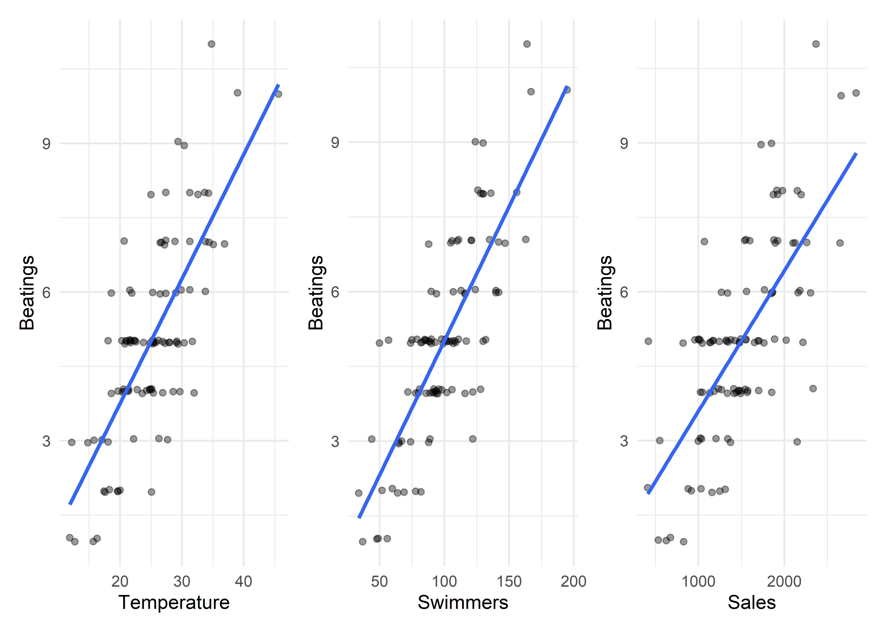

–>
Die linerare Regression wird genutzt, um lineare Zusammenhänge in Form eines Modells zu beschreiben, Vorhersagen zu treffen und zu überprüfen, ob Zusammenhänge und das Modell an sich “statistisch signifikant” sind. Gleichzeitig kann man an dieser Stelle die Aufteilung dieser Website infrage Stellen, da die lineare Regression (als Sonderform des Allgemeinen Linearen Modells, oder kurz GLM für Generalized Linear Model) z.B. auch zum Vergleich von Mittelwerten oder für Klassifikationen eingesetzt werden kann. Alle klassischen Verfahren im Abschnitt “Mittelwerte vergleichen” sind im Kern auch nur lineare Modelle, die einer etwas anderen Form aufgeschrieben wurden. Die zugrundeliegeden Formeln sind jedoch dieselben.
Alle Berechnungen und Abbildungen können wir mit unseren Standardpaketen durchführen. Wir benötigen das tidyverse zum Data Wrangling und zur Visualisierung der Daten. haven benötigen wir für den Import von SPSS-Dateien und rstatix für statistische Analysen. Wenn man sich den Import und das Bereinigen der Daten sparen möchte (Schritte, die man dennoch üben sollte), findet man die Daten auch im Paket costatcompanion.
## Loading required package: carData##
## Attaching package: 'car'## The following object is masked from 'package:dplyr':
##
## recode## The following object is masked from 'package:purrr':
##
## someIm Kapitel zur Berechnung und Interpretationen der Korrelation haben wir uns den Datensatz eines kleinen Freibads angeschaut, in dem zu verschiedenen Tagen im Jahr sowohl die Besucherzahl, als auch verschiedene andere Variablen eingetragen waren. Wir haben bereits herausgefunden, dass die Temperatur an einem bestimmten Tag sehr eng mit der Anzahl der Schwimmer im Schwimmbecken korrelierte, aber können wir diesen Zusammenhang genauer beschreiben? Und wie groß ist dieser Zusammenhang? Nur weil es einen starken Zusammenhang gibt, muss das ja nicht bedeuten, dass er auch groß ist.
Wir benutzen denselben Datensatz, den wir auch bei den Korrelationen kennengelernt haben. Den Datensatz water_park finden wir also im Paket costatcompanion. In der ersten Spalte (day_id) finden wir eine individuelle ID des beobachteten Tages (in zufälliger Reihenfolge). Nachfolgend finden wir vier Variablen, die an jedem Tag gemessen wurden. Dazu zählen die Durchschnitts-Temperatur (temperature), die Anzahl der Schwimmer im Schwimmbecken (swimmers), den Tages-Umsatz des Freibad-Kiosks in Euro (sales) und die Anzahl der Schlägereien, wegen der die Polizei gerufen werden musste (beatings).
Wir interessieren uns für den Zusammenhang zwischen der gemessenen Temperatur mit der Anzahl der beobachteten Schwimmer im Schwimmbecken.
## # A tibble: 100 x 5
## day_id temperature swimmers sales beatings
## <chr> <dbl> <dbl> <dbl> <dbl>
## 1 1 28.9 106 1554 7
## 2 2 34.4 142 2261 7
## 3 3 25.1 72 1232 4
## 4 4 21.8 50 823 5
## 5 5 39 167 2661 10
## 6 6 21.4 81 1025 4
## 7 7 26.7 111 1895 7
## 8 8 25 128 2153 8
## 9 9 12.7 37 534 1
## 10 10 16.3 56 829 1
## # ... with 90 more rowsDa wir uns im GLM bewegen, gelten die üblichen Voraussetzungen. Vor allem sollten die Daten jedoch auf Linearität und potenzielle Ausreißer geprüft werden! Außerdem sollten die Modell-Residuen normalverteilt und die unabhängigen Variablen sollten nicht multikollinear sein. Zudem sollten die unabhängigen Variablen Varianz aufweisen.
## # A tibble: 2 x 13
## variable n min max median q1 q3 iqr mad mean sd se
## <chr> <dbl> <dbl> <dbl> <dbl> <dbl> <dbl> <dbl> <dbl> <dbl> <dbl> <dbl>
## 1 swimmers 100 34 195 97 82 121 39 28.2 100. 30.0 3.00
## 2 tempera~ 100 11.9 45.6 25.1 21.0 28.9 7.98 6.00 25.0 6.00 0.6
## # ... with 1 more variable: ci <dbl>## # A tibble: 1 x 7
## day_id temperature swimmers sales beatings is.outlier is.extreme
## <chr> <dbl> <dbl> <dbl> <dbl> <lgl> <lgl>
## 1 51 45.6 195 2837 10 TRUE FALSE## # A tibble: 1 x 7
## day_id temperature swimmers sales beatings is.outlier is.extreme
## <chr> <dbl> <dbl> <dbl> <dbl> <lgl> <lgl>
## 1 51 45.6 195 2837 10 TRUE FALSENach den mathematischen Verfahren sind in den Variablen temperature und swimmers jeweils ein Outlier (Ausreißer) vorhanden, die wir auch in den Boxplots (s.u.) sehen. Ob diese beiden einen Einfluss auf unser Modell haben, sollten wir als Fragestellung im Hinterkopf behalten. Man sollte auf jeden Fall untersuchen, warum ein Datenpunkt ein Outlier ist. In diesem Falle ist es einfach ein besonders heißer Tag mit besonders vielen Besuchern. Wir haben also keinen Grund anzunehmen,w arum hier etwas falsch gelaufen sein könnte, deshalb lassen wir diesen Datenpunkt im Datensatz und behandeln ihn wie jeden anderen.
Anhand der Abbildungen können wir feststellen, dass die Verteilungen relativ regelmäßig sind und es einen linearen Zusammenhang zwischen der gemessenen Durchschnittstemperatur eines Tages und der Anzahl von Schwimmern im Schwimmbecken gibt. An dieser Stelle habe ich bereits etwas geschummelt, indem ich in die rechte Abbildung eine blaue Linie eingezeichnet habe. Das ist tatsächlich schon die regressionsgerade, die wir mit der linearen Regression schätzen/herausfinden wollen.
Diese Linie zu schätzen ist in R so einfach die Torte essen. Wir arbeiten hier hauptsächlich mit dem Befehl lm(), der für Linear Model steht. Da es sich hierbei um eine native Funktion von R handelt, ist die Schreibweise und Reihenfolge der Argumente etwas ungewont, lässt sich aber fix lernen. Wir geben als erstes Argument die Formel an, anhand derer wir einen Zusammenhäng schätzen wollen. Auf der linken Seite der Formel steht immer die abhängige Variable. Dann kommt eine Tilde (~) und anschließend die unabhängige(n) Variable(n), also jene, die wir heranziehen, um die abhängige Variable zu erklären. Genau so kann man die Formel dann auch lesen: diese_variable ~ jene_variable heißt so viel wie “Diese Variable wird erklärt durch jene Variable”. In unserem Beispiel versuchen wir die Anzahl der beobachteten Schwimmer in Abhänigkeit der gemessenen Durchschnittstemperatur vorherzusagen, also lautet unsere Formel swimmers ~ temperature. Als zweites Argument geben wir den Datensatz an, der dem Modell zugrunde liegen soll (in diesem Falle water_park). Bei fehlenden Werten sollte man das Argument na.action = na.exclude mitgeben, da es sonst zu einem Fehler kommt und R kein Ergebnis ausspuckt (weil es nicht weiß, wie es mit fehlenden Werten umgehen soll).
##
## Call:
## lm(formula = swimmers ~ temperature, data = water_park)
##
## Coefficients:
## (Intercept) temperature
## -7.473 4.297Wenn wir diesen Befehl ausführen, bekommen wir einen recht sparsamen Überblick über das geschätzte Modell, d.h. den \(y\)-Achsen-Abschnitt und die Steigung der geschätzten Gerade. Um noch mehr aus diesem Modell zu quätschen, müssen wir uns eine Zusammenfassung ansehen, die wir mit der Funktion summary() erhalten. Dabei kann man zwei Wege wählen: Entweder speichert man das geschätzte Modell in einer Variablen, oder man “pipet” das Modell direkt in die Funktion summary().
# Erste Möglichkeit
water_model <- lm(swimmers ~ temperature, data = water_park)
summary(water_model)
# Zweite Möglichkeit
lm(swimmers ~ temperature, data = water_park) %>%
summary()##
## Call:
## lm(formula = swimmers ~ temperature, data = water_park)
##
## Residuals:
## Min 1Q Median 3Q Max
## -44.229 -8.395 1.770 10.281 30.668
##
## Coefficients:
## Estimate Std. Error t value Pr(>|t|)
## (Intercept) -7.4729 6.6247 -1.128 0.262
## temperature 4.2965 0.2577 16.675 <2e-16 ***
## ---
## Signif. codes: 0 '***' 0.001 '**' 0.01 '*' 0.05 '.' 0.1 ' ' 1
##
## Residual standard error: 15.39 on 98 degrees of freedom
## Multiple R-squared: 0.7394, Adjusted R-squared: 0.7367
## F-statistic: 278 on 1 and 98 DF, p-value: < 2.2e-16Beide Möglichkeiten führen zum identischen Ergebnis. Es ist jedoch immer eine gute Idee, das geschätzte Modell an sich abzuspeichern, um damit noch andere Dinge anzustellen. Der Output entspricht so gar nicht unserem “tidy way of life”, den wir durch die Benutzung des Tidyverse leben wollen. Gucken wir ihn uns trotzdem einmal an:
Anhand des Outputs können wir feststellen, dass der Einfluss der Temperatur auf die beobachtete Anzahl der Schwimmer signifikant ist, \(b_1 = 4.30, p < .001\). Wie interpretiert man diesen Koeffizienten nun? Der Regressionskoeffizient eines Prädiktors (einer unabhängigen Variable) sagt und immer folgendes: Erhöht man diesen Prädiktor um eine Einheit, dann ändert sich das Kriterium (die abhängige Variable) um genau diese Menge. In diesem Fall bedeutet das also: Steigt die Durchschnittstemperatur um 1 Grad Celsius, dann werden 4.30 Schwimmer mehr beobachtet, bzw. geschätzt. Zudem erhalten wir \(R^2\) (den Determinationskoeffizienten, bzw. das Bestimmtheitsmaß) und seine korrigierte Form, \(R^2_\text{adj}\). Man sollte immer die korrigierte Version, also \(R^2_\text{adj}\) angeben, was in diesem Fall \(R^2_\text{adj} = .737\) ist und uns sagt, dass wir durch unser lineares Modell 73.7% der Varianz in den Daten erklären können. Ob dieser Wert größer als 0 ist, kann uns der \(F\)-Test sagen, der ebenfalls mit ausgegeben wird (ganz am Ende des Outputs). Dieser ist signifikant, \(F(1, 98) = 278, p < .001\), also ist \(R^2 > 0\).
Um unsere Grundphilosophie nicht ins Wanken zu bringen, können wir das Paket broom nutzen, dass “messy” Outputs, wie den der Funktion lm() nimmt und “tidy” macht. Dafür beinhaltet das Paket drei Grundfunktionen, deren Nutzen man grob kennen sollte.
tidy() nimmt die Koeffizienten eines Modells und überführt diese in eine saubere Tabelle (tibble)glance() nimmt die Angaben zur Modellgüte und überführt diese ebenfalls in eine saubere Tabelle (tibble)augment() nimmt Angaben zu jedem originalen Datenpunkt (z.B. die Residuen) und fügt diese dem Datensatz hinzuWer das Paket noch nicht installiert hat, kann dies wie immer ganz einfach nachholen.
Wenn wir uns die Koeffizienten mit Signifikanztests ausgeben lassen wollen, nutzen wir also tidy(). So erhalten wir eine ganz simple, saubere und allumfassende Übersicht über unsere Modell-Koeffizienten.
## # A tibble: 2 x 5
## term estimate std.error statistic p.value
## <chr> <dbl> <dbl> <dbl> <dbl>
## 1 (Intercept) -7.47 6.62 -1.13 2.62e- 1
## 2 temperature 4.30 0.258 16.7 2.25e-30Angaben zur Modellgüte können wir mit glance() auslesen. Hier bekommen wir sogar wesentlich mehr Informationen als durch die normale summary().
## # A tibble: 1 x 12
## r.squared adj.r.squared sigma statistic p.value df logLik AIC BIC
## <dbl> <dbl> <dbl> <dbl> <dbl> <dbl> <dbl> <dbl> <dbl>
## 1 0.739 0.737 15.4 278. 2.25e-30 1 -414. 834. 842.
## # ... with 3 more variables: deviance <dbl>, df.residual <int>, nobs <int>Residuen, Distanzen und ähnliches werden mit augment() an den ursprünglichen Datensatz angehängt.
## # A tibble: 100 x 8
## swimmers temperature .fitted .resid .std.resid .hat .sigma .cooksd
## <dbl> <dbl> <dbl> <dbl> <dbl> <dbl> <dbl> <dbl>
## 1 106 28.9 117. -10.7 -0.700 0.0142 15.4 0.00354
## 2 142 34.4 140. 1.67 0.111 0.0347 15.5 0.000220
## 3 72 25.1 100. -28.4 -1.85 0.0100 15.2 0.0173
## 4 50 21.8 86.2 -36.2 -2.37 0.0129 15.0 0.0366
## 5 167 39 160. 6.91 0.464 0.0649 15.4 0.00748
## 6 81 21.4 84.5 -3.47 -0.227 0.0136 15.5 0.000357
## 7 111 26.7 107. 3.76 0.245 0.0108 15.5 0.000329
## 8 128 25 99.9 28.1 1.83 0.0100 15.2 0.0170
## 9 37 12.7 47.1 -10.1 -0.674 0.0525 15.4 0.0126
## 10 56 16.3 62.6 -6.56 -0.433 0.0313 15.5 0.00303
## # ... with 90 more rowsDie angehängten Variablen sind netteweise mit einem “.” als Präfix versehne, wodurch wir erkennen können, welche Werte neu sind. Wir erhalten die geschätzten Werte (.fitted), die im Grunde die Werte einer jeden Beobachtung auf der Regressionsgeraden sind. Dann erhalten wir die rohen Residuen (.resid) und die standardisierten Residuen (.std.resid), sowie die Hebelwerte (hat values, .hat), den Cook-Abstand (.cooksd) und die Standardabweichung der Residuen, wenn die jeweilige Beobachtung ausgeschlossen werden würde (.sigma).
Vor allem mit den Ergebnissen von augment() können wir die Voraussetzungen einer linearen Regression prüfen. Unter anderem sollen die
Das könnten wir nun ganz einfach überprüfen. Da das jedoch Schritte sind, die wir für jede Regression durchlaufen sollten, und sie somit Standard sind, gibt es kluge Köpfe, die Abbildungen zur Modelldiagnostik für verschiedenen Verfahren im Paket ggfortify zusammengestellt haben.
Diese Abbildungen sehen für unser Modell folgendermaßen aus. In diesem Fall ist alles im großen und ganzen in Ordnung.
## Warning: `arrange_()` is deprecated as of dplyr 0.7.0.
## Please use `arrange()` instead.
## See vignette('programming') for more help
## This warning is displayed once every 8 hours.
## Call `lifecycle::last_warnings()` to see where this warning was generated.Natürlich können wir die oben dargestellten Kriterien zur Modell-Diagnostik auch an “harten Zahlen” prüfen und müssen uns nicht auf Abbildungen verlassen. Wobei wir die Normalverteilung von Variablen doch schon anhand eines QQ-Plots beurteilen sollten (Abbildung “Normal Q-Q”, die von ggfortif ausgegeben wird), was in diesem Falle in Ordnung war. Des weiteren sollte der Betrag eines standardisierten Residuums nicht größer als 3.29 sein. Auch sollte der Cook-Abstand kleiner gleich 1 sein (also nicht größer als 1) und die Hebelwerte kleiner als der doppelte durchschnittliche Hebelwert. Das können wir mithilfe von augment() ganz einfach lösen. Zunächst berechnen wir jedoch die Schwelle für problematische Hebelwerte nach der obigen Formel.
# Anzahl der Prädiktoren
k <- 1
# Anzahl der Beobachtungen
n <- nrow(water_park)
hat_threshold <- 2 * (k + 1) / nHebelwerte, die größer als 0.04 sind, sollten also untersucht werden. Um unsere Diagnostiken zu berechnen, erstellen wir mit mutate() einfach vier neue Variablen: Jeweils eine, die angibt, wenn es ein Problem in dem jeweiligen Diagnostik-Outcome gibt (codiert als 1) und dann die Summe dieser Variablen. Weist ein Fall “keine Probleme” auf, dann hat er in diesen neuen Variablen einen Wert von jeweils 0 und somit ist auch die Summe dieser neuen Variablen 0. Ist ein Wert problematisch, ergibt das in der Summe 1, bei zwei problematischen Werten 2 und wenn alle drei Werte problematisch sind, dann ergibt die Summe 3. Anschließend können wir uns jene Fälle rausfiltern, in denen Probleme aufgetreten sind.
water_augmented <- augment(water_model)
water_augmented %>%
mutate(
diag_resid = if_else(abs(.std.resid) > 3.29, 1, 0),
diag_cook = if_else(.cooksd > 1, 1, 0),
diag_hat = if_else(.hat > hat_threshold, 1, 0),
diag_sum = diag_resid + diag_cook + diag_hat
) %>%
filter(diag_sum != 0)## # A tibble: 6 x 12
## swimmers temperature .fitted .resid .std.resid .hat .sigma .cooksd
## <dbl> <dbl> <dbl> <dbl> <dbl> <dbl> <dbl> <dbl>
## 1 167 39 160. 6.91 0.464 0.0649 15.4 7.48e-3
## 2 37 12.7 47.1 -10.1 -0.674 0.0525 15.4 1.26e-2
## 3 48 11.9 43.7 4.34 0.291 0.0582 15.5 2.61e-3
## 4 147 36.9 151. -4.07 -0.271 0.0497 15.5 1.92e-3
## 5 195 45.6 188. 6.55 0.456 0.129 15.5 1.54e-2
## 6 44 12.2 44.9 -0.945 -0.0632 0.0560 15.5 1.18e-4
## # ... with 4 more variables: diag_resid <dbl>, diag_cook <dbl>, diag_hat <dbl>,
## # diag_sum <dbl>Wir erhalten somit 6 Fälle in denen die Hebelwerte größer als die errechnete Schwelle (0.04) sind. Was macht man jetzt mit einem solchen Ergebnis? Man diskutiert es! Fälle einfach auf Basis problematischer Diagnostiken auszuschließen, geht nicht! Diese Diagnostiken sind nur ein Mittel, um zu beurteilen, wie gut oder schlecht unser Modell ist. In diesem Fall sind 4 von 100 Hebelwerten leicht über der errechneten Schwelle (zwei sind deutlich darüber). Das Modell ist also gar nicht so schlecht und wir können es so beibehalten. O ### Berichten We found the mean daily temperature to predict te amount of swimmers in a pool significantly. The overall model was statistically significant, \(F(1, 98) = 278, p < .001, R^2_\text{adj} = .737\). The model coefficients can be found in the following table.
| Term | b | SE | t | p |
|---|---|---|---|---|
| (Intercept) | −7.473 | 6.625 | −1.128 | 0.262 |
| temperature | 4.297 | 0.258 | 16.675 | < .001 |
Folgt.
Einige aufmerksame Leser werden bereits festgestelt haben, dass es im Datensatz water_park mehr als nur zwei Variablen (swimmers und temperature) gibt. Es findet sich auch eine Variable sales, mit der die Umsätze des Freibad-Kiosks in Euro festgehalten ist, sowie die Variable beatings, in der die Anzahl der Schlägereien aufgeführt ist, wegen derer die Polizei gerufen werden musste.
## # A tibble: 100 x 5
## day_id temperature swimmers sales beatings
## <chr> <dbl> <dbl> <dbl> <dbl>
## 1 1 28.9 106 1554 7
## 2 2 34.4 142 2261 7
## 3 3 25.1 72 1232 4
## 4 4 21.8 50 823 5
## 5 5 39 167 2661 10
## 6 6 21.4 81 1025 4
## 7 7 26.7 111 1895 7
## 8 8 25 128 2153 8
## 9 9 12.7 37 534 1
## 10 10 16.3 56 829 1
## # ... with 90 more rowsWir ändern unsere Fragestellung etwas und fragen nun: Können wir die Anzahl der Schlägereien durch die anderen Variablen erklären? Na klar! Außer, dass wir jetzt weitere Variablen als Prädiktoren benutzen, ändert sich nichts. Dennoch geben wir dem ganzen einen neuen Namen: Multiple Regression (also eine lineare Regression mit mehreren Prädiktoren).
Zu Beginn ist es immer ratsam zu untersuchen, ob die potenziellen Prädiktoren keine Ausreißer enthalten und mit dem Kriterium (der abhängigen Variable) linear zusammenhängen. Dafür nutzen wir wieder deskriptive Statistiken und Abbildungen. Um zu überprüfen, wie stark die potenziellen Prädiktoren mit dem Kriterium (Anzahl der Schlägereien) zusammenhängen, können wir auch Korrelationen berechnen.
## # A tibble: 4 x 13
## variable n min max median q1 q3 iqr mad mean sd
## <chr> <dbl> <dbl> <dbl> <dbl> <dbl> <dbl> <dbl> <dbl> <dbl> <dbl>
## 1 beatings 100 1 11 5 4 6 2 1.48 5.01e0 2.02
## 2 sales 100 410 2837 1476 1156. 1861. 706. 554. 1.50e3 500.
## 3 swimmers 100 34 195 97 82 121 39 28.2 1.00e2 30.0
## 4 tempera~ 100 11.9 45.6 25.1 21.0 28.9 7.98 6.00 2.50e1 6.00
## # ... with 2 more variables: se <dbl>, ci <dbl>
Wir können so relativ leicht erkennen, dass alle potenziellen Prädiktoren mit dem Kriterium beatings signifikant korrelieren. Ein Problem könnte jedoch auftreten, wenn die Prädiktoren “zu gut” miteinander korrelieren; dieses Problem nennt man Multikollinearität.
Multikollinearität ist ein Problem und tritt bei linearen Regressionen auf, wenn zwei oder mehr Prädiktoren zu hohe Korrelationen miteinander haben. Das sorgt dafür, dass die Schätzungen der Modellparameter ungenau bis falsch werden, aber auch die Modellinterpretation kann problematisch werden, wenn Prädiktoren miteinander hoch korreliert sind. Eine Möglichkeit, Multikollinearität aufzudecken, ist die Analyse der Korrelationen der Prädiktoren untereinander. Aus der obigen Abbildung geht hervor, dass die höchste Korrelation zwischen den Prädiktoren \(r = .95\) ist (jene zwischen der Anzahl der Schwimmer und dem Kiosk-Umsatz), was probleatisch sein könnte.
Eine weitere Möglichkeit ist der sogenannte Varianzinflationsfaktor (VIF) oder sein Kehrwert, die Toleranz. Im Paket car gibt es die Funktion vif() die ein lineares Modell als Argument nimmt und uns den VIF berechnet. Nach Field (2018) sind Werte größer 10 ein Problem. Wir müssen das Modell also einmal schätzen, um uns den VIF für jeden Prädiktor ausgeben zu lassen. Das Modell erweitern wir mit einem ganz normalen +. Wer das Paket car noch nicht installiert hat, kann das natürlich sofort nachholen.
water_big_model <- lm(beatings ~ swimmers + temperature + sales, data = water_park)
vif(water_big_model)## swimmers temperature sales
## 15.359204 3.954328 10.640960Der VIF von swimmers ist mit 15.36 deutlich über 10 und wir sollten darüber nachdenken, diesen zu entfernen. Das machen wir nun auch und gucken uns den VIF dann erneut an.
## temperature sales
## 2.658403 2.658403Und schon haben wir kein Problem mehr.
Das Modell haben wir im vorigen Schritt bereits definiert und schätzen lassen, können es uns also direkt anschauen. Wir haben ein im allgemeinen signifikantes Modell, das viel Varianz aufklärt, \(F(2, 97) = 69.7, p < .001, R^2_\text{adj} = .581\). Außerdem sind alle Prädiktoren signifikant, da alle \(p < .05\).
## # A tibble: 3 x 5
## term estimate std.error statistic p.value
## <chr> <dbl> <dbl> <dbl> <dbl>
## 1 (Intercept) -1.11 0.567 -1.95 0.0538
## 2 temperature 0.173 0.0357 4.85 0.00000469
## 3 sales 0.00119 0.000429 2.77 0.00675## # A tibble: 1 x 12
## r.squared adj.r.squared sigma statistic p.value df logLik AIC BIC
## <dbl> <dbl> <dbl> <dbl> <dbl> <dbl> <dbl> <dbl> <dbl>
## 1 0.590 0.581 1.31 69.7 1.76e-19 2 -167. 343. 353.
## # ... with 3 more variables: deviance <dbl>, df.residual <int>, nobs <int>Wir gehen genauso vor wie oben, wo wir nur einen Prädiktor hatten; alle Diagnostik-Kriterien bleiben bestehen.
# Anzahl der Prädiktoren
k <- 2
# Anzahl der Beobachtungen
n <- nrow(water_park)
# Schwelle berechnen
hat_threshold <- 2 * (k + 1) / n
# Residuen, Distanzen und Hebelwerte zum Datensatz hinzufügen
water_medium_augmented <- augment(water_medium_model)
water_medium_augmented %>%
mutate(
diag_resid = if_else(abs(.std.resid) > 3.29, 1, 0),
diag_cook = if_else(.cooksd > 1, 1, 0),
diag_hat = if_else(.hat > hat_threshold, 1, 0),
diag_sum = diag_resid + diag_cook + diag_hat
) %>%
filter(diag_sum != 0)## # A tibble: 6 x 13
## beatings temperature sales .fitted .resid .std.resid .hat .sigma .cooksd
## <dbl> <dbl> <dbl> <dbl> <dbl> <dbl> <dbl> <dbl> <dbl>
## 1 10 39 2661 8.81 1.19 0.939 0.0711 1.31 2.25e-2
## 2 7 35.1 2650 8.13 -1.13 -0.889 0.0639 1.31 1.80e-2
## 3 2 19.7 410 2.80 -0.795 -0.632 0.0769 1.31 1.11e-2
## 4 5 25.3 419 3.78 1.22 1.01 0.140 1.31 5.51e-2
## 5 10 45.6 2837 10.2 -0.168 -0.138 0.129 1.32 9.35e-4
## 6 4 25.4 2335 6.07 -2.07 -1.65 0.0804 1.30 7.92e-2
## # ... with 4 more variables: diag_resid <dbl>, diag_cook <dbl>, diag_hat <dbl>,
## # diag_sum <dbl>Dieses Mal finden wir sechs “problematische” Fälle, in denen wieder die Schwelle des Hebelwerts (0.06) leicht überschritten wurde. Wir tun ansonsten ist alles in Ordnung, also werden wir an dieser Stelle keine Maßnahmen ergreifen und dieses Ergebnis für eine eventuelle Diskussion im Hinterkopf behalten.
Natürlich könnten wor auch ggfortify zur Hilfe nehmen und uns diagnostische Plots ausgeben lassen. Auch hier gibt es keine großen Probleme, die Residuen erscheinen homogen, die Daten ans ich normalverteilt und auch bezüglich des Cook-Abstands und den Hebelwerten gibt es keine dramatischen Fälle.
Wenn wir uns die Koeffizienten anschauen, könnten wir etwas stutzig werden.
## # A tibble: 3 x 5
## term estimate std.error statistic p.value
## <chr> <dbl> <dbl> <dbl> <dbl>
## 1 (Intercept) -1.11 0.567 -1.95 0.0538
## 2 temperature 0.173 0.0357 4.85 0.00000469
## 3 sales 0.00119 0.000429 2.77 0.00675Man könnte meinen, dass die Temperatur einen viel größeren Einfluss auf die Anzahl der Schlägereien hätte als der Kiosk-Umsatz, da der Regressionskoeffizient (\(b\)) von temperature um ein vielfaches höher ist als der von sales. Dieser Eindruck täuscht aber. Was diese Koeffizienten bedeuten, haben wir bereits geklärt: Erhöhrt man den Prädiktor um eine Einheit, erhöht sich das Kriterium um den Wert des Koeffizienten.
Bei der Interpretation von Koeffizienten muss man bei multiplen Regressionen jedoch etwas aufpassen, denn diese Änderung des Kriteriums gilt nur, wenn man alle anderen Prädiktoren konstant hält. Also, mit jedem Grad Durchschnittstemperatur mehr, finden 0.17 Schlägereien statt, wenn man alle anderen Prädiktoren konstant hält. Das macht auch viel Sinn, denn wenn die Durchschnittstemperatur ein Grad höher ist, aber auch der Umsatz des Kiosks gestiegen ist, dann ändert sich das Kriterium ja um den Einfluss von temperature und sales gleichzeitig. Will man den Effekt jedoch isoliert berichten und verstehen, muss man immer angeben, dass dieser Effekt nur so groß ist, wenn alle anderen Prädiktoren konstant gehalten werden.
So erkennen wir auch, warum der Einfluss von sales so klein erscheint: Die Skala von sales ist eine komplett andere als die von temperature. Wenn wir uns die deskriptiven Statistiken von oben noch einmal in Errinnerung rufen, ist die Range der Werte von temperature zwischen 11.9 und 45.6 Grad Celsius. Die von sales jedoch zwischen 410 und 2837 Euro. Um den Einfluss von Prädiktoren, die verschiedene Einheiten haben, besser nachvollziehen zu können, kann man die Regressionskoeffizienten standardisieren. Diese standardisierten Koeffizienten nennen die meisten dann \(\beta\) (im gegensatz zu \(b\)). Die Einheit dieser \(\beta\) ist dann für alle Prädiktoren identisch (nämlich Standardabwechungen), wodurch man sie besser vergleichen kann.
Dafür kann man einen von zwei Wegen wählen: Entweder alle Variablen bereits vor der Regression standardisieren und die Regression dann “neu” berechnen, oder die Regressionskoeffizienten anhand der Formel \[\beta_j = b_j \cdot \dfrac{s_{x_j}}{s_y}\] umwandeln. Dabei ist \(b_j\) der rohe Koeffizient, \(s_{x_i}\) die Standardabweichung des jeweiligen Prädiktors und \(s_y\) die Standardabweichung des Kriteriums.
Zusammen mit den deskriptiven Statistiken würden wir in diesem Falle die folgenden standardisierten Koeffizienten erhalten.
## [1] 0.5138614## [1] 0.2945545Eine gute Übung ist es jedoch, die Variablen vorher auch mal zu standardisieren und das Modell erneut zu schätzen. Die Funktion, mit der man in R standardisieren kann, ist scale().
# Alle nummerischen Variablen standardisieren
water_park_scaled <- water_park %>%
mutate(
across(where(is.numeric), ~ scale(.)[,1], .names = "scaled_{col}")
)
# Das neue Modell schätzen
water_scaled_model <- lm(scaled_beatings ~ scaled_temperature + scaled_sales, data = water_park_scaled)
# Standardisierte Koeffizienten ausgeben lassen
tidy(water_scaled_model)## # A tibble: 3 x 5
## term estimate std.error statistic p.value
## <chr> <dbl> <dbl> <dbl> <dbl>
## 1 (Intercept) 2.53e-16 0.0647 3.91e-15 1.00
## 2 scaled_temperature 5.14e- 1 0.106 4.85e+ 0 0.00000469
## 3 scaled_sales 2.94e- 1 0.106 2.77e+ 0 0.00675Die standardisierten Regressionskoeffizienten (\(\beta\)) interpretiert man genau so, wie die rohen Koeffizienten (\(b\)), außer, dass sich die Einheit der Variablen in Standardabweichungen geändert hat. Erhöht sich die Temperatur um eine Standardabweichung, dann erhöht sich die Anzahl der Schlägereien um 0.514 Standardabweichungen. Das kann man mithilfe der Standardabweichungen (siehe unten) wieder in verständliche Einheiten umrechnen. Erhöht sich die Temperatur um eine Standardabweichung (6 Grad Celsius), dann erhöht sich die Anzahl der Schlägereien um \(0.514 \cdot 2.02 = 1.04\), wenn alle anderen Prädiktoren konstant gehalten werden.
Erhöht sich der Kiosk-Umsatz um eine Standardabweichung (500 Euro), dann erhöht sich die Anzahl der Schlägereien um \(0.294 * 2.02 = 0.59\). Nun können wir mit Sicherheit sagen, dass die Temperatur einen größeren Einfluss auf die Anzahl der Schlägereien im Schwimmbad hat.
## # A tibble: 3 x 4
## variable n mean sd
## <chr> <dbl> <dbl> <dbl>
## 1 beatings 100 5.01 2.02
## 2 sales 100 1500. 500.
## 3 temperature 100 25.0 6.00We found daily temperature and sales to predict the amount of beatings significantly, \(F(2, 97) = 69.7, p < .001, R^2_\text{adj} = .581\). The raw and standardized regression coefficients can be found in the following table.
| b | SE | β | t | p | |
|---|---|---|---|---|---|
| (Intercept) | −1.107 | 0.567 | 0.000 | −1.952 | 0.054 |
| temperature | 0.173 | 0.036 | 0.514 | 4.851 | < .001 |
| sales | 0.001 | 0.000 | 0.294 | 2.768 | 0.007 |
Ist unser Modell mit zwei Prädiktoren eigentlich signifikant besser als ein Modell mit nur einem Prädiktor? Das können wir ganz einfach testen lassen. Zunächst müssen wir die beiden Modelle definieren. Wir betrachten das korrigierte \(R^2_\text{adj}\) und stellen eine leichte Verbesserung von .553 (Modell 1) auf .581 (Modell 2) fest. Aber ist dieser Unterschied signifikant?
model_1 <- lm(beatings ~ temperature, data = water_park)
model_2 <- lm(beatings ~ temperature + sales, data = water_park)
glance(model_1)## # A tibble: 1 x 12
## r.squared adj.r.squared sigma statistic p.value df logLik AIC BIC
## <dbl> <dbl> <dbl> <dbl> <dbl> <dbl> <dbl> <dbl> <dbl>
## 1 0.557 0.553 1.35 123. 4.99e-19 1 -171. 348. 356.
## # ... with 3 more variables: deviance <dbl>, df.residual <int>, nobs <int>## # A tibble: 1 x 12
## r.squared adj.r.squared sigma statistic p.value df logLik AIC BIC
## <dbl> <dbl> <dbl> <dbl> <dbl> <dbl> <dbl> <dbl> <dbl>
## 1 0.590 0.581 1.31 69.7 1.76e-19 2 -167. 343. 353.
## # ... with 3 more variables: deviance <dbl>, df.residual <int>, nobs <int>Diese Frage können wir mit einem Chi-Quadrat-Differenztest berechnen, den R (verwirrenderweise) in der Funktion anova() zur Verfügung stellt.
## Analysis of Variance Table
##
## Model 1: beatings ~ temperature
## Model 2: beatings ~ temperature + sales
## Res.Df RSS Df Sum of Sq F Pr(>F)
## 1 98 179.38
## 2 97 166.24 1 13.133 7.6627 0.006753 **
## ---
## Signif. codes: 0 '***' 0.001 '**' 0.01 '*' 0.05 '.' 0.1 ' ' 1Und wir stellen fest, dass unser Modell durch das Aufnehmen von sales als Prädiktor signifikant verbessert wird, \(\chi^2(1) = 7.66, p = .007\).
Cook, R. D., & Weisberg, S. (1982). Residuals and Influence in Regression. Chapman and Hall.
Field, A. P. (2018). Discovering Statistics using IBM SPSS Statistics (5th ed.). SAGE.
Hoaglin, D. C., & Welsch, R. E. (1978). The Hat Matrix in Regression and ANOVA. The American Statistician, 32(1), 17–22. https://doi.org/10.1080/00031305.1978.10479237